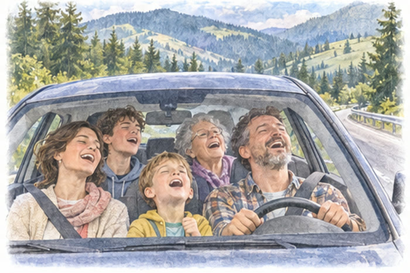

Listen to the text
Speed:

Last summer my family drove to the Carpathians. Eight hours in the car. Dad said, "Everybody chooses music for one hour. No complaining." It was a real lesson in music genres. Hour one was Dad's. He chose classic rock from the time when he had long hair. Long guitar solos. He played the drums on the steering wheel. Mum asked him to stop. Hour two was Mum's: jazz and soul. Soft voices, a saxophone, a piano. I must say that it was perfect for looking out of the window at the fields. My little brother fell asleep. Hour three was mine. I chose hip-hop and electronic music. Dad said, "Where is the melody?" I said, "No complaining." He was silent for fifty-eight minutes. Hour four belonged to my brother Lev, who is six. He chose songs from cartoons. The same four songs. Again and again. We all know them by heart now. Forever. Hour five was Grandma's. She chose Ukrainian folk songs. And then something happened. Dad started singing. Mum joined him. Grandma sang the second voice. Even I knew the words, although I didn't know that I knew them. For hours six and seven we didn't change anything. We sang folk songs, then pop hits from the radio, then the cartoon songs again, because Lev asked. We arrived in the mountains without voices. I learned two things. First, every genre is good in the right place. Second, the best music is the music that you sing with your family in a car with open windows.
Tap any sentence to hear it again.
Сподобалось? На сайті ще більше матеріалів для вчителів!
Reader, презентації, ігри, діагностичні та контрольні роботи до підручників 1-11 класів.
Перейти на сайт materials.allaenglish.com